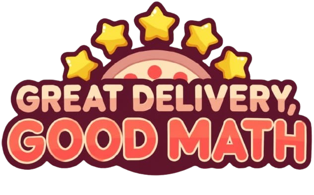

O projeto Great Delivery, Good Math consiste no desenvolvimento de um jogo educativo inspirado em Good Pizza, Great Pizza, no qual o jogador assume o papel de um entregador de pizzas. A proposta é utilizar a dinâmica de um jogo de entregas para apresentar e aplicar conceitos matemáticos em situações práticas do cotidiano.
Diferentemente do jogo original, em que o foco está na administração de uma pizzaria, o jogador de Great Delivery, Good Math será responsável pela etapa seguinte: realizar as entregas dos pedidos e administrar os recursos financeiros obtidos durante o trabalho.
Durante o jogo, será necessário analisar cada entrega, considerando fatores como distância, gastos com combustível, manutenção do veículo, pagamento recebido e possíveis gorjetas. Dessa maneira, a matemática será utilizada como uma ferramenta para auxiliar o jogador na tomada de decisões.
O desenvolvimento do projeto será realizado a partir da criação de situações-problema baseadas no cotidiano de um entregador. Cada situação apresentará informações que deverão ser analisadas pelo jogador para que ele possa tomar uma decisão.
A dificuldade será aumentada progressivamente. Nas fases iniciais, serão utilizados cálculos mais simples. Conforme o jogador avançar, serão introduzidos problemas envolvendo porcentagens, proporções, funções e interpretação de dados.
O Great Delivery, Good Math propõe unir entretenimento e educação por meio de um jogo baseado em situações do cotidiano. Ao assumir o papel de entregador, o jogador deverá utilizar conhecimentos matemáticos para calcular gastos, analisar entregas, administrar seu dinheiro e buscar melhores resultados.
Assim, a matemática deixa de ser apresentada apenas como um conteúdo teórico e passa a fazer parte diretamente da experiência do jogador, demonstrando sua importância na resolução de problemas e na tomada de decisões do dia a dia.
Nós, alunos do SENAC, desenvolvemos este projeto com o objetivo de mostrar que a matemática pode ser aprendida de uma forma mais simples, dinâmica e divertida. A ideia do jogo surgiu a partir do trabalho conjunto entre nós, alunos, e nossas professoras de TI e Matemática, unindo os conhecimentos das duas áreas para criar uma experiência educativa e interativa.
O jogo foi pensado para facilitar a compreensão de conteúdos matemáticos que, muitas vezes, podem parecer difíceis ou complicados. Por meio de desafios, cálculos e situações presentes na dinâmica do jogo, buscamos transformar o aprendizado em algo mais interessante e acessível.
Além de desenvolver nossos conhecimentos em matemática e tecnologia, o projeto também nos permitiu trabalhar em equipe, colocar nossas ideias em prática e perceber que o conhecimento pode ser adquirido de diferentes maneiras. Acreditamos que aprender não precisa ser algo cansativo ou monótono: também é possível aprender brincando, se divertindo e enfrentando desafios.
Nosso projeto representa não apenas a criação de um jogo, mas uma forma diferente de enxergar o aprendizado, mostrando que a matemática e a tecnologia podem estar presentes de maneira criativa e divertida na educação.